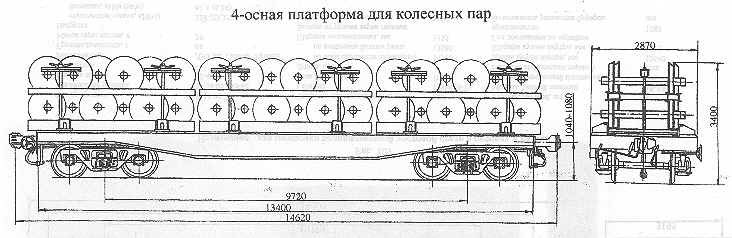

Назначение: для перевозки колесных пар с правом выхода на пути МПС
Параметры
| Номер проекта | 911.00.000 |
| Технические условия | |
| Модель вагона | |
| Тип вагона | |
| Изготовитель | ДВЗ |
| Грузоподъемность, т | 70 |
| Масса тары вагона, т | 24 |
| Нагрузка: статическая осевая, кН(тс) |
230(23,5) |
| погонная, кН/м(тс/м) | 63(6,42) |
| Скорость конструкционная, км/ч | 120 |
| Габарит | 0-ВМ(01-Т) |
| База вагона, мм | 9720 |
| Длина, мм: по осям сцепления автосцепок |
14620 |
| по концевым балкам рамы | 13400 |
| Ширина максимальная, мм | 2870 |
| Высота от уровня верха головок рельсов максимальная, мм | 3400 |
| Количество осей, шт. | 4 |
| Модель 2-осной тележки | 18-100 |
| Наличие переходной площадки | нет |
| То же с ручным тормозом | нет |
| Наличие стояночного тормоза | есть |
| Количество контейнеров, шт. | 3 |
| Размеры контейнера, мм: длина |
4520 |
| ширина | 1998 |
| Количество транспортируемых колесных пар в одном контейнере, шт. | 12 |
| Год постановки на серийное производство | 1979 |
| Возможность установки буфера | нет |